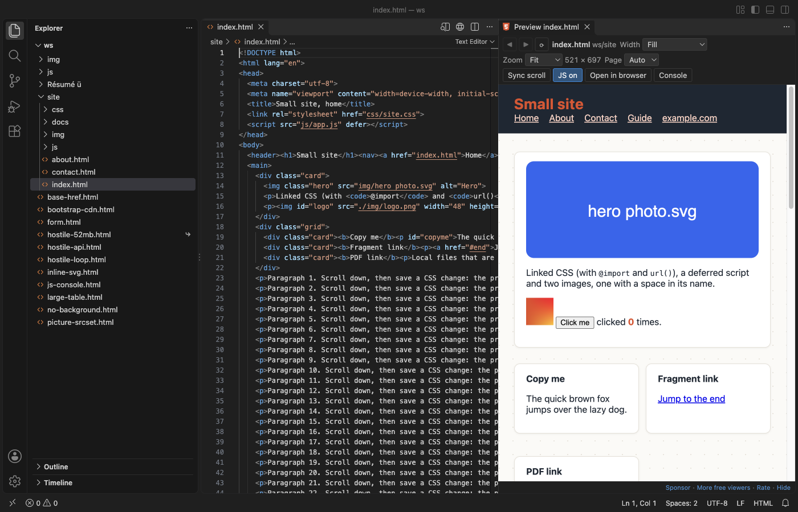

Open files in VS Code and Cursor / Code and APIs
Preview an HTML file with its CSS and images in VS Code
Install the free HTML Preview & HTML Viewer by Zovo, open an .html file and press Ctrl+K V (Cmd+K V on macOS). The page opens beside the editor with its linked CSS, JavaScript and images, and it updates as you type without saving. It needs no local web server and no port. If you need a real server, for example for fetch of local JSON, use Live Preview from Microsoft instead.
Free, MIT license. Extension ID zovo.zovo-html-preview, version 0.1.0. Needs VS Code 1.90.0 or newer.

Steps in VS Code
- Install HTML Preview from the Marketplace, or press Ctrl+P (Cmd+P on macOS) and run
ext install zovo.zovo-html-preview. - Open an
.htmlfile. - Click the preview icon at the top right of the editor, or press Ctrl+K V (Cmd+K V on macOS). Your .html file stays a normal text editor.
- Pick a width from the Width list (320, 375, 768, 1024 or 1440 px) to see the page at phone, tablet or desktop size.
- Click Console to see
console.loglines, script errors and linked files that were not found.
Steps in Cursor, Windsurf or VSCodium
- Open the Extensions view with Ctrl+Shift+X (Cmd+Shift+X on macOS).
- Search for
zovo.zovo-html-previewand click Install. Cursor, Windsurf and VSCodium install from Open VSX, where it is published aszovo/zovo-html-preview. - If your editor has no gallery, download the .vsix from the Open VSX page and run "Extensions: Install from VSIX...".
- Then use it the same way as in VS Code.
What HTML Preview handles
- Linked stylesheets,
@import, CSSurl(), scripts,srcset, fonts, video and local iframes, from relative,../and/paths. - Updates while you type, and when you save a linked CSS, JS or image file. The scroll position stays where it was.
- Links to other local pages open in the preview, with Back and Forward buttons.
- A page stuck in an endless loop is stopped after 5 seconds. It also works over Remote-SSH, WSL and in dev containers.
What it does not do
- It is a preview, not a web server. Pages that need one (
fetchof local JSON, server-side includes, PHP) do not work here. - Bare module imports such as
import "react"and import maps are not followed. - CSS, fonts and scripts from a CDN stay off until you click Load for this file.
- Edits made in the preview are not saved back to the file.
In JetBrains IDEs (IntelliJ IDEA, PyCharm, WebStorm, CLion and others)
- No Zovo plugin for JetBrains IDEs. HTML Preview is for VS Code and editors built on it.
- Built-in browser preview. WebStorm and IntelliJ IDEA Ultimate can show an open HTML file in a built-in preview or in your browser, from the browser icons at the top right of the editor. No plugin is needed.
Other options
- Live Preview (
ms-vscode.live-server, 14 million installs, on Open VSX). From Microsoft. Pick this one when the page needs a real local server. Its own description: "Hosts a local server in your workspace for you to preview your webpages on." - HTML Preview (
tht13.html-preview-vscode, 3 million installs, not on Open VSX). Its own description: "Provides ability to preview HTML documents." Not on Open VSX. - HTML Preview (
george-alisson.html-preview-vscode, 2.7 million installs, not on Open VSX). Its own description: "Provides ability to preview HTML documents." Not on Open VSX.
Install counts and Open VSX status were checked on 9 November 2026. Descriptions in quotes are the extensions' own.
Questions
Do I need Live Server or a local web server?
Not for plain pages. HTML Preview reads the linked files through VS Code, so CSS, scripts and images work with no server. Pages that call fetch on local files or need PHP still need a server.
Does it work in Cursor?
Yes. It is on Open VSX, which is where Cursor, Windsurf and VSCodium get extensions.
Is it safe to preview a page I did not write?
The page runs in a sandboxed frame that cannot reach VS Code, your other files or the network. In Restricted Mode, scripts do not run at all.
More about HTML Preview
Read the HTML Preview page for every feature and setting, or the source code on GitHub.
Related guides
- Open a SARIF file in VS Code
- Preview a Swagger or OpenAPI file in VS Code
- Test a regex in VS Code
- Take a screenshot of code in VS Code
Support this work
If this extension saves you time, you can support the work on GitHub Sponsors. Monthly tiers start at $5, and one-time tiers start at $15. Sponsorship is optional, and the tool works the same without it.
Need your format supported?
Open a format request with a sample file, and I reply there whether it can be done. For USD 299 once, through this GitHub Sponsors tier, I add your file format or a missing feature to this extension, with tests, within 7 days.